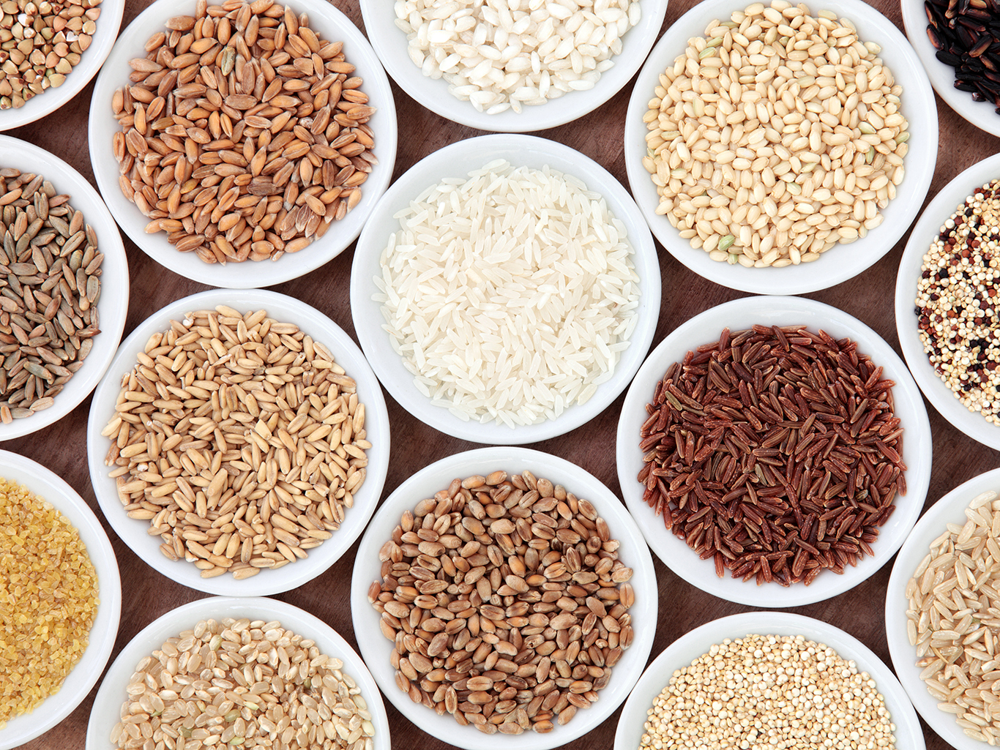

Всем известно слово «кашевар». Но не все представляют, чем отличается эта кулинарная профессия от поварской. Повар, конечно, шире. Повар должен уметь сварить и суп, и кашу. А кашевар, если он только кашевар, уже не сможет сварить хорошего супа, зато кашу сделает неизмеримо лучше, чем разносторонний повар-кулинар. В чем же здесь дело?
Повар, который пользуется в основном варкой, жарением и тушением, даже при всех своих практических знаниях, опыте не может уделять постоянное внимание только одному виду блюд — каше. Он сварит ее в кулинарном отношении грамотно. Но и только. Шедевра из каши он не создаст. Его каша будет обычной и не вызовет ни восхищения, ни упреков.
Совсем иное дело — кашевар-специалист. У него нет эрудиции, нет знаний и принципов, но у него есть опыт. Он «сидит» только на кашах. И если он любит свое дело, если он наблюдателен, то в совершенстве изучил норов каш. В них для него нет секретов, сюрпризов. Он знаком со всеми неожиданностями, которые могут преподнести каши.
Ведь зерно бывает каждый раз другого качества; то зрелее, спелее, то зеленее, то суше, то с большим запасом белков, то крахма-листее, то слизистее — и это у одного и того же сорта крупы, которая нам, профанам, кажется совершенно одинаковой и сегодня, и завтра, и год-два спустя.
А ведь один и тот же вид зерна может иметь несколько разновидностей, несколько сортов, отличающихся объемом, формой, размером, длиной. Возьмем тот же рис, ту же гречневую или перловую крупу. Для хорошего кашевара все это имеет значение, все это он учитывает, приступая к варке.
Но большее значение, чем крупяное сырье, имеет правильный расчет воды или другой жидкости (молока).
Конечно, существуют примерные коэффициенты, но именно примерные, приблизительные. Вода тоже может быть очень разной: мягкой, жесткой, средней, насыщенной минеральными солями, сильно хлорированной и т. д. При варке каши все эти качества значительно важнее, чем при варке супа, а тем более при отваривании мяса, рыбы, овощей и бобовых.
Почему?
А потому, что при отваривании, скажем, пельменей, лапши, картофеля мы вообще сливаем воду, в которой варились эти продукты. Она нужна нам лишь как среда. Иногда так поступают и при отваривании морской рыбы, мяса.
Если мы будем есть суп или отвар из жесткой воды, то сразу почувствуем, что он чуть-чуть невкуснее, чем из мягкой воды. Но такая вода не повлияет на бобовые, они почти до конца варки будут надежно защищены от ее проникновения своей плотной второй оболочкой, так же как и на кусок мяса или рыбы в супе, ибо эти продукты в процессе варки выделяют защитную белковую оболочку.
Совсем иное дело каши.
Во время варки зерна, особенно дробленого, почти вся вода или большая ее часть идет на разваривание, на разбухание этого зерна, на превращение его в кашу. Она, следовательно, никуда не улетучивается, а впитывается в зерно, остается в каше, составляет ее нерасторжимую часть.
Поэтому качество воды для каши важнее, чем для варки других видов пищи. Более того, при варке супа жесткая вода лишь ослабит ароматичность и приятную бархатистость бульона, а при варке каши минеральные соли жесткой воды обязательно осядут, задержатся в зерне. Вот почему каша как бы «вдруг» может стать невкусной, хотя для нее взято хорошее зерно, она варилась положенное время, не подгорела и т. д.
Но для хорошего кашевара такое «вдруг» не должно происходить. Он, зная коварство каш, или, вернее, коварство воды при варке каш, предусмотрит любую неожиданность.
Самое простое — заменить воду, опробовав ее заранее. Для этого надо вскипятить немного воды и заварить ею ложечку, пол-ложечки черного чая в чашке, а затем попробовать. Насыщенная минеральными солями, жесткая вода даст неприятный металлический привкус, чай будет резко горьким. Опытные кашевары не нуждаются в таком определении. Они устанавливают жесткость воды просто в холодном виде. На то и опыт.
Но как быть, если воду нельзя заменить?
Оказывается, и здесь есть выход: нужно вскипятить эту воду, а затем варить кашу уже на кипяченой воде. Вкус от этого значительно улучшается. Есть и еще один прием, который обычно используют народы Юга и Востока: отварить в воде зерно наполовину, не дав ему вобрать в себя воду, не дав развариться, а затем слить воду и, добавив в полусваренную кашу немного молока, продолжать держать ее на огне до полного вваривания молока в кашу.
Если же молока мало, то можно с самого начала варить кашу на водно-молочной смеси, добавив любое имеющееся количество молока к воде и произведя общий расчет жидкости, необходимой для того, чтобы сварить кашу данного вида.
К этому же последнему приему относится и внесение в самом начале приготовления в воду, на которой варится каша, жира, масла. Цель та же: смягчить жесткость воды и усилить способность каждого зернышка отталкивать воду так, чтобы она шла не на его разваривание изнутри, а на варку извне и последующее вываривание. Этот прием применяется, например, при варке узбекского плова.
Чтобы практически закрепить хотя бы часть этих сведений, попробуем сварить разные виды каш, руководствуясь изложенными положениями.
Гречневая каша
Наиболее проста в смысле варки гречневая каша, имеющая хорошее естественное защитное покрытие каждой зернинки и не выделяющая при варке слизь (крахмал). Испортить гречневую кашу трудно, и тем не менее ее сплошь и рядом готовят неумело, невкусно.
Почему?
Да потому, что кажущаяся простота ее приготовления заставляет действовать на авось, а не по правилам. Между тем как ни покажется странным, а кашеварные правила похожи на математические — они точны, ясны, кратки и нетрудны для запоминания.
Для гречневой крупы на каждую единицу объема крупы должно браться вдвое больше по объему воды (1:2). И это соотношение должно соблюдаться не на глазок, а абсолютно точно, до грамма!
Кроме того, есть и определенные правила выдержки температуры, силы огня (его интенсивности) и давления.
Именно о них часто забывают, исполнив точно то, что касается соотношения крупы и воды. И поэтому каши превращаются в самые невкусные блюда. А ведь когда-то они были самыми лакомыми. Они были сами по себе вкусными, оттого что в них сохранялись витамины и особые ароматические вещества, оттого что структура зерна не нарушалась из-за неверного режима давления.
Все это мы можем понять и объяснить теперь, в конце XX века, на основе современных знаний о веществе и материалах вообще. Но люди, жившие 100 — 200 лет назад и более, готовили правильно чисто эмпирически, на основе повседневного опыта, наблюдая, что и при каких условиях удается, а что нет.
Так, для гречневой каши требуются плотная крышка, сильный огонь в течение первых 3 — 5 минут до закипания воды, а затем спокойное, умеренное кипение, в самом конце — слабое, до полного выкипания воды не только с поверхности, но и со дна кастрюли или котелка. Кроме того, необходима металлическая (не эмалированная) кастрюля или казанок, лучше всего с утолщенным, выпуклым, а не горизонтальным, плоским дном. Именно эта конструкция облегчает выкипание жидкости со дна и создает равномерное прогревание и разбухание всей каши.
И еще одно важное правило для гречневой и для большинства каш: засыпав крупу и залив ее водой, не трогать, не мешать, не вторгаться в процесс, не подымать и не приоткрывать крышку. Каша варится не столько водой, сколько паром, и поэтому выпускать его — значит недодать каше положенного тепла. Иначе каша либо подгорает, сохнет, либо, если мы пытаемся «помочь» ей, хотим устранить свою ошибку и подливаем воду, превращается в размазню, портится.
Отсюда вывод: исправить ошибку в середине приготовления каш практически нельзя. Лучше все делать по правилам с самого начала и ни в коем случае не вмешиваться в процесс приготовления.
В результате все приготовление, скажем, одного, полутора, двух стаканов гречневой крупы и соответствующего им количества воды (двух, трех, четырех стаканов) заканчивается в пределах 15 — 16 минут, если нагрев ведется на газовой плите.
Держать гречневую кашу на огне дольше этого времени нецелесообразно — ее вкус будет ухудшаться, особый гречневый аромат — выветриваться, слабеть, а зерно — терять форму, трескаться и становиться кляклым. Именно это происходит с гречневой кашей при приготовлении ее в общепите, и потому она не пахнет настоящей гречкой.
Почему так нелепо происходит? А потому, что в кулинарии, особенно в народной, большинство сведений передается традиционно и устно. А по старой традиции гречневую кашу готовили от двух до четырех часов. Только в таких случаях приготовление шло не на непосредственном огне, а в русской печи, на так называемом «вольном духу», то есть при падающей температуре, когда печь остывала после окончания выпечки в ней хлебов. И шло такое медленное приготовление не в металлической кастрюльке, а в глиняной корчаге или в толстостенном чугунке.
Кое-кто «слышал звон», что гречневую кашу готовили долго, и бездумно, механически стал переносить это правило и для наплитного приготовления, считая, что подержать подольше гречку на огне — это как раз то, что надо. А поскольку за последние три-четыре десятилетия гречневая крупа из самой массовой превратилась в редкую в домашнем быту, то «умение» готовить ее мы как бы передоверили общепитовским работникам, которые, к сожалению, действуют по принципу «испорченного телефона».
Вот и приходится теперь писать о таких, казалось бы, элементарных вещах!
Но процесс приготовления каши как блюда не заканчивается на том, что она сварилась, хотя этот момент означает, что главное сделано.
Остается еще важная и ответственная деталь — заправка каши, определение ее вкусового акцента.
Для каждого сорта каш этот акцент строго индивидуален, о чем в нашем общепите постоянно забывают, сдабривая все каши одной и той же одинаковой подливкой. Именно это и наносит непоправимый вред каше, портит ценный продукт, превращает ее в невкусный балласт, дискредитирует каши как вид особого блюда, низводит их до уровня малоприятного гарнира.
Вообще надо решительно покончить с тем, чтобы каши подавали как гарнир к мясным или рыбным блюдам. Гарниры могут быть только овощными. Каши же — особый, совершенно самостоятельный вид блюд. И именно поэтому столь важна их правильная заправка.
Для гречневой каши заправка должна состоять из сливочного масла, лука, сушеных белых грибов и крутых рубленых яиц. Это классическая, неотъемлемая заправка гречневой каши! Всякая иная для нее — неприемлема, неуместна!
Лук можно (и даже нужно) не пережаривать, а вносить мелконарезанным в середине кипения в кашу, просто засыпав сверху, не трогая каши, не перемешивая ее. Точно так же засыпают вместе с закладкой крупы в кипяток и сухие белые грибы в виде порошка (достаточно одного гриба на каждые два стакана крупы, чтобы создать заметный, приятный акцент).
Масло и рубленые крутые яйца вносят только после полной готовности каши (после полного выкипания из нее воды). Лучше всего, если каша, снятая с огня, постоит под крышкой после готовности еще пять минут для так называемого «упревания», то есть полного развития ее вкуса. Только после этого ее можно перемешивать с маслом и яйцами и уже после — солить и тотчас же, горячей, подавать на стол.
Холодная, остывшая каша — это насмешка над здравым смыслом, неуважение к кулинарному искусству и профанация этого благородного национального блюда.
Все сказанное относится к гречневой ядрице; из продельной гречневой крупы настоящую кашу делать нельзя.
Продел может использоваться на другие кулинарные цели — в овощно-крупяные супы, как добавка к начинке зраз, для украинских гречаников, но только не для приготовления русской гречневой каши.
Рисовая каша
Еще более капризна в приготовлении рисовая каша, или отварной рис. Известно, что в странах традиционного рисосеяния: Японии, Вьетнаме, Корее, Индии и других — рисом питаются ежедневно и он обладает таким вкусом, который не получается при европейских способах варки. Даже в самых лучших ресторанах Европы не могут сварить его так вкусно, как в самой захудалой восточной харчевне.
Отчего?
Оттого, что варят у нас рис в большой воде, сливают слизь, промывают затем кипятком, а иногда перед варкой крупу подсушивают, обжаривают — словом, делают массу операций, работают вовсю, чтобы получить такой же рассыпчатый рис с несклеенными рисинками, как на Востоке. И получают, но... какой ценой! Полным разрушением оболочки и вымыванием крахмалистых и белковых веществ риса. Получают, в сущности, красивую зернинку, чисто декоративный продукт. Надо ли удивляться, что он невкусен! Это вполне естественно. Скорее удивительно, что его все-таки можно есть!
Уже способ варки риса на пару, о котором мы говорили в начале главы, дает возможность, не делая массы ненужной работы, сохранить большую часть питательных и вкусовых веществ риса. Большую, но не все! Ибо даже на пару рис в подвешенном состоянии отдает в кипящую под ним воду некоторую часть своего состава. Но он будет значительно вкуснее риса, сваренного, или, вернее, вываренного целиком в воде.
А можно сварить рис в воде и не вываривать его? Можно.
Как? Как варят на Востоке.
Точное соотношение объема в куб. см: 200 (риса): 300 (воды).
Вода — кипяток, сразу же, чтобы не шло лишнее, трудно рассчитываемое в каждом отдельном случае время на доведение воды до кипения.
Плотная, наиплотнейшая крышка, не оставляющая никакого зазора между собой и кастрюлей, а для того чтобы не растерять точно отмеренный пар, — груз, тяжелый гнет на крышку, который не давал бы подняться ей даже в наивысший момент кипения.
Раз все точно рассчитано, то и время варки должно быть абсолютно точно: 12 минут (не 10, не 15, а точно 12).
Огонь: три минуты сильный, семь минут умеренный, остальные — слабый.
Каша готова. Но не спешите открывать крышку. Здесь-то и подстерегает вас еще один секрет. Оставьте крышку закрытой и не трогайте кашу ровно столько времени, сколько она варилась. Пусть она постоит на плите ровно двенадцать минут. Затем откройте. Перед вами — рассыпчатая каша, чуть плотноватая.
Положите поверх нее кусочек сливочного масла граммов в 25 — 50, чуть-чуть посолите, если любите солоно. И размешайте ложкой как можно равномернее, но не разминая «куски», не растирая кашу.
Вот теперь можно попробовать! Ну как?!
Посмотрите на себя в... зеркало! Ручаюсь на сто процентов, что на вашем лице написано нечто смахивающее на смесь недоумения и удивления. Как будто вам подсунули то, что вы меньше всего ожидали увидеть.
Так оно и есть! Вы ждали, что рис будет иметь обычный, знакомый вам как свои пять пальцев вкус рисовой каши.
Оказывается, ею... и не пахнет!
Только когда вы съедите весь рис, на вашем лице определенно появится удовлетворение и даже удовольствие. Теперь вы можете наконец сказать, что знаете настоящий вкус риса.
Не забудьте только заглянуть в зеркало!
Рис имеет сотни сортов, что, разумеется, отражается на его использовании и на вкусе приготовленных из него блюд. Однако несмотря на это, главная кулинарная особенность риса состоит в том, что хотя он и обладает собственным вкусом, но вкус этот — нейтрален, то есть не накладывается на вкус всех других соединяемых с рисом пищевых продуктов.
Это свойство чрезвычайно важно. Оно дает возможность сдабривать рис практически любым видом приправ, придавать блюдам из риса любую гамму ароматов, любые вкусовые оттенки — сладкие и кислые, острые и нежные, пикантные и жирные.
Вот почему рис столь любим и распространен на всех континентах, в самых различных странах и особенно среди народов Азии, где его подают с томатным и соевым соусом, с красным перцем, луком, чесноком, с урюком и изюмом, с черносливом и инжиром, с бараниной и курятиной, с моллюсками и вареньем и т. д. и т. п.
Оттого-то правильно сваренный и умело, разнообразно приправленный рис веками не приедается и является хлебом для трех миллиардов населения нашей планеты.
А что применяем мы в нашей бытовой повседневной практике из всего этого кулинарного многообразия?
Весьма и весьма немногое. И притом не в силу недостатка продуктов, а в силу нашей кулинарной косности, равнодушия и — честно скажем — из-за нашей кулинарной неграмотности.
А ведь Россия входит в ряды видных рисосеющих держав мира. И поэтому надо серьезно думать, как по-умному, с большей пользой распорядиться в дальнейшем этим нашим продовольственным богатством, как повысить не количество, не вал, а культуру нашего потребления!
Пшенная каша
Пшено, перебрав, вымойте раз шесть-семь, под конец в горячей воде, прежде чем начать готовить из него что-либо. А почему это нужно? Да потому, что пшено бывает чрезвычайно загрязнено.
Промывать его надо до тех пор, пока вода не станет прозрачной. Покрытие (шелуха) у каждого зернышка крепкое, лакированное, ему ничего не будет от лишней промывки. А когда вымоется, то надо его чуток и отпарить: вот почему нужно в последний раз промывать пшено горячей водой.
Варят пшено всегда в большой воде, в любом количестве, до полготовности, не ожидая, чтобы зерно разварилось и открыло свои недра. Эту воду все равно сливают. А затем доливают молока и варят до его выпаривания и полной готовности пшенной каши.
Хотя пшено считается малоценной кашей, попробуйте его сваренным по всем правилам. Думаю, понравится, особенно если молока взять побольше и разварить сильнее, а затем через час долить в еще теплую кашу простокваши и либо есть сразу, либо дать постоять ночь.
Такая подкисленная пшенная каша чрезвычайно вкусна и тоже не имеет навязчивого вкуса обычной пшенной каши, приевшейся всем. «Любит» пшенная каша также заправку салом пополам со сливочным маслом и луком.
Овсяная каша
Все знают о том, что овсяная каша полезна и детям и взрослым. Но те и другие частенько не любят ее. Одна из причин в том, что овсяная каша для взрослых должна готовиться совершенно не так, как для детей.
Более того, есть овсяная каша только для взрослых, и есть овсяная каша только для детей. Они отличаются приготовлением и самой крупой.
Однако часто бывает, что детям готовят как раз кашу для взрослых, а взрослым предлагают детскую. Никто не подозревает, что произошла ужасная путаница, и обе стороны бывают недовольны такой пищей или даже отказываются от нее.
Но стоит лишь привести все в соответствие, как овсяная каша станет действительно любимой едой и взрослых и детей.
Как же это сделать? И что надо сделать?
Прежде всего, взрослой овсяной кашей считается каша из целого, недробленого и немятого овсяного зерна. Обращаться с этим зерном надо так же, как с рисом. Более того, его можно смешивать с рисом и варить вместе. Пропорции смесей произвольные, но вкуснее бывает, когда риса чуть больше.
Такую овсяную или овсяно-рисовую кашу, как и всякую крутую, рассыпчатую, можно заправлять маслом или (и) жареным луком.
Детской овсяной кашей считается любая каша из дробленого, нецельного (давленого) или молотого овсяного зерна (толокна).
Почему?
Потому что дети с их нежными слизистыми полости рта плохо воспринимают жесткую, крутую, рассыпчатую овсяную кашу с ее плотноватой оболочкой, которую именно за ее крутость и плотность (есть что жевать!) ценят взрослые, особенно мужчины.
Дробленое зерно, а тем более молотое (толокно) совсем лишено оболочки, варится быстро и дает одну клейко-слизистую массу, по консистенции приятную для ребенка. Но масса эта невкусная. Поэтому ее принято сластить, скрашивать сахаром. И ребенок ест, с грехом пополам, с уговорами, присказками, привыкая есть подслащенную кашу в любое время дня.
Но это как раз и портит вкус ребенка. Не вкус данного блюда. Не вкус на несколько часов или на один день. А тот Вкус с большой буквы, который должен быть для человека путеводной нитью в его кулинарных скитаниях в течение всей жизни и который он обязан не только сохранять в чистоте, но и передавать потомкам.
Здесь, отвлекаясь от конкретной каши, хочется со всей серьезностью подчеркнуть, что вкус надо воспитывать с детства, потеря его — столь же ненормальное явление, как слепота, глухота, хотя и не столь заметное.
Вкус — это один из видов ощущений человека, один из видов познания окружающей нас материальной среды. Наряду с обонянием, зрением и осязанием, которые дают нам представление о запахе, цвете, форме и консистенций пищевых продуктов, вкус составляет классический квартет ощущений, при помощи которого человек знакомится с продуктами питания, с пищей.
Вкус — первая скрипка в этом квартете. Оценку пище мы во многом даем по вкусу. Вкусно — хорошо. Очень вкусно — отлично. Невкусно — плохо. Но что значит вкусно или невкусно?
В кулинарной науке и практике существует традиционная договоренность о том, что такое хорошо и что такое плохо во вкусовом отношении.
Все градации вкуса сведены, подобно румбам морского компаса, к строгим категориям, тоже четырем: горько, сладко, кисло, солоно. Первые две — это юг и север кулинарного вкуса, вторая пара более похожа на восток и запад. Между ними промежуточные румбы: кисло-сладкое, кисло-соленое, горько-соленое, кисло-горькое. Для определения нюансов вкуса, его оттенков, в органолептической терминологии существуют понятия: горьковатое, кисловатое, солоноватое, сладковатое. Имеются еще понятия пресного и пряного, чтобы выразить те вкусовые ощущения, которые не укладываются в обычные «румбы».
Таким образом, для профессионалов вкуса, для гроссмейстеров органолептики наука о вкусе столь же точна, как и математика. Вкус у такого человека должен быть не субъективным, а приближаться к объективным, установленным показателям. Такими мастерами вкуса являются дегустаторы и титестеры.
Но раз вкус можно определять, устанавливать его качество, давать ему более или менее точную оценку, то выходит, что этот показатель не такой уж субъективный, что он даже главный показатель качества пищевого продукта или блюда. Так оно и есть. Любые скрытые дефекты пищи обнаруживаются без всяких приборов, посредством проверки ее вкуса. В этом состоит одна из особенностей кулинарной науки.
Есть у вкуса и вторая важная особенность. Даже самая важная. Вкусное блюдо, вкусный пищевой продукт — приятнее. А это значит, что он лучше усваивается организмом. Следовательно, вкус не только невидимая абстракция, но и вполне «весомая» категория, ибо вкусная пища всегда сытнее. И это не только так кажется, но и оказывает реальное воздействие на наше самочувствие, настроение, психику и в конечном счете на наше поведение и работоспособность.
Третья особенность вкуса, важный аспект его воздействия на человека состоит в том, что пища должна быть разнообразной по вкусу, вкусовые соотношения должны быть подвижными, а не статичными, раз и навсегда заданными. И обо всем этом не надо забывать, когда мы готовим ребенку обычную овсяную кашу.
Что же надо сделать? И как?
Первое: разварить геркулес или толокно в воде (желательно в мягкой).
Второе: пропустить кашу через дуршлаг или частое металлическое сито, чтобы задержать не поддающиеся развариванию части — овсяную ость, остаточную шелуху и т. п. Эти твердые части больно ранят, царапают слизистую рта ребенка, отчего он выплевывает всю кашу, будучи сам не в состоянии отделить мелкие жесткие частички от всей массы в ложке.
Родители обычно кричат при этом на ребенка, заставляют его вновь съесть кашу. Ребенок, естественно, раздражается, плачет не только из-за неприятного ощущения, но и из-за чувства обиды, из-за той несправедливости, с которой с ним обходятся. В результате завтрак испорчен, ребенок расстроен. Мама кипит оттого, что недавно выстиранная рубашка или костюм непоправимо заляпаны выплюнутой кашей и испачканы шоколадкой, которая не в состоянии была примирить ребенка с болью и обидой.
А всего этого легко избежать, выполнив второе правило.
Третье: долить молока, варить, чтобы получилась не клейкая слизистая масса, а жиденькая, почти текучая кашица, которую можно даже пить и совсем легко проглатывать.
Четвертое: теперь надо довести кашицу до вкуса. Очень осторожно подсластить, но так, чтобы сахар не чувствовался, а лишь отбивал сыроватый привкус разваренного зерна. Затем слегка ароматизировать анисом или бадьяном, корицей, а если их нет, то высушенной лимонной или апельсиновой цедрой, растертой в порошок. Если и ее нет, то взять свежую цедру лимона, апельсина, отварить ее в четверти стакана воды и влить ложку-две этого густого ароматного навара в кашицу, хорошо размешав ее.
Теперь приятная консистенция, мягкость каши придут в соответствие с приятным вкусом.
Для улучшения вкуса годится всякий другой фруктово-ягодный ароматизатор, мармелад (разваренный) или же сливки и масло (их вводят в готовую кашу некипячеными, ибо сливки не выносят кипения — теряют свой сливочный вкус).
Такая овсяная каша без сомнения будет воспринята ребенком с радостью, а возможность менять ее ароматизаторы поможет тому, чтобы она не приедалась.
Перловая каша
Перловка принадлежит к тому виду каш, который единодушно не любят все. «Мужицкий рис», как ее презрительно величают. В основном мы встречаемся с ней в супах, где она одиноко плавает, затерявшись среди картошки, морковки, лука и других овощей.
И кто поверит сейчас, что это любимая каша Петра I?
Но это действительно так. Только многие разучились варить перловку, как рожь, пшеницу и полбу, джугару и многие другие злаки. Вот и лежит она в магазине, ждет своего звездного часа, пока какая-нибудь расторопная старушка не купит целый мешок этой крупы... для своих кур. Так ценный «человечий» продукт идет на корм скоту лишь оттого, что мы, люди, утратили навык его приготовления. Страдает при этом не только государство, но и мы сами.
Перловка — кладовая белка и белковосодержащей клейковины. С ней следует обращаться столь же деликатно, как с бобовыми. Надо постараться разварить ее, не давая завариться каждому зерну в несъедобную твердую «пулю». И тогда перловка покажет себя. Отблагодарит вкусом.
Но как по-настоящему разварить перловку? Что для этого надо сделать? Почему, сколько бы мы ни варили перловку, она продолжает нам казаться невкусной?
Прежде всего, мы совершенно забыли и потому преспокойно пропускаем один очень и очень важный момент в приготовлении перловой крупы, о котором еще в XII—XVII веках знали карелы, коми, пермяки и который не был свойствен русской кухне, а потому стал постепенно исчезать из практики уже в XVIII веке, вместе со старой новгородской культурой, вобравшей в себя отчасти бытовые навыки финно-угорских народов.
Прием этот должен применяться еще до варки перловой крупы, и состоит он в вымачивании ее в холодной воде в течение 10—12 часов.
Иными словами, перед тем как готовить перловую кашу, следует заранее залить холодной водой, замочить предназначенную для варки крупу. При этом замачивать надо не на глазок, а один стакан (200 мл) перловой крупы залить ровно одним литром воды и оставить, повторяю, не менее чем на 10—12 часов. Пусть стоит в кухне с вечера всю ночь!
Утром воду надо будет слить, а вымоченную крупу засыпать в подогретое до 40 градусов молоко (в два литра молока, в нашем конкретном случае).
Таким образом, пропорции для правильной варки перловки точные и ясные, и их нетрудно запомнить:
1 стакан крупы,
1 литр воды для замачивания,
2 литра молока для варки.
Как затем варить?
Пока молоко не закипит и не прокипит после этого 5 минут, варят непосредственно на наплитном огне, в кастрюле без крышки. А затем закрывают кастрюлю крышкой, снимают с огня и переставляют в большую кастрюлю с кипящей водой, то есть в так называемую водяную баню.
Это делается для того, чтобы каша, варящаяся в молоке, не подгорала, не садилась бы на дно, а молоко бы не убегало и чтобы за такой кашей не надо было непрестанно следить, не считая того, что время от времени подливать выкипающий кипяток в большую кастрюлю с водой.
Варка перловой каши в водяной бане должна продолжаться 6 часов. Предвижу крики: «Невероятно!», «Ужасно долго!», «Кто же это будет делать?» — и тому подобные. Не надо паниковать: весь реальный расход времени на варку перловой каши практически сводится к какому-нибудь десятку минут: залить водой (две секунды), слить воду (одна секунда), всыпать в молоко и вскипятить (шесть-семь минут), переставить в водяную баню (пять секунд), ну и, конечно, перед едой размешать придется (две минуты хватит?).
Все остальное время перловая каша «делается сама»: вымачивается и варится без присмотра. Конечно, дома должен все время кто-то быть: все-таки огонь горит. Но этот кто-то (бабушка, отец-пенсионер, школьник, идущий во вторую смену, студент в период экзаменационной сессии, женщина в декретном отпуске и т. д.) может спокойно заниматься другими своими хозяйственными, учебными или служебными делами, зная лишь время, когда ему нужно уделить одну-две минуты перловой каше.
Если же речь идет об общепите (а мы должны добиться, чтобы общепит, наконец, готовил по всем правилам), то там ни о каком расходе времени и говорить нечего: день, когда повара будут готовить перловку, можно будет засчитывать им как выходной!
А теперь несколько слов о заправке. Для перловки, как для всякой уважающей себя каши, заправка, разумеется, своя, индивидуальная.
Когда каша готова (а готовность устанавливается как по времени, так и по появлению у каши красивого, благородного бежевого цвета с палевым оттенком), ее снимают с огня, дают постоять под крышкой минут десять, перекладывают из кастрюли (эмалированной) в фаянсовую или фарфоровую посуду, подливают немного сливок, кладут сливочное (и только сливочное) масло и старательно размешивают до равномерной консистенции и цвета.
А потом — едят! Едят как совершенно самостоятельное блюдо, едят не просто, а с наслаждением, переживая (да, именно переживая, а не пережевывая) каждый маленький, необычайно нежный, приятный глоток. Пережевывать — нечего, в идеале вся каша должна превратиться в нежную, тончайшую пасту, которая сама собой растворяется во рту.
Еда настоящей перловой каши — это своего рода кулинарное переживание, открытие нового кулинарного мира для тех людей, кто в спешке привык глотать невкусную еду и не только позабыл, но и утратил радости ощущения вкуса, аромата, нежности обычной пищи, связывая эти понятия исключительно с какими-нибудь редкими и недоступными продуктами.
Я хочу, чтобы каждый, кто прочтет эти строки, непременно приготовил бы самостоятельно, хотя бы один раз, перловую кашу по вышеуказанному и единственно для нее правильному способу. Только один раз! Второй раз убеждать и упрашивать уже не придется.
И чем больше будет людей, лично убедившихся в том, что каша — это не навязчивая «нагрузка» к блюду, а само по себе незаурядное блюдо, ценное своим растительным происхождением и протеиновым содержанием, которые способны адекватно отражаться в превосходном вкусе, тем более высокие требования мы сможем справедливо предъявлять окружающему нас общепиту и быть непримиримее к тому браку, к той порче продуктов, которая нередко допускается в силу не только небрежности и недобросовестности, но и в силу просто-напросто неумения, незнания, кулинарной некультурности и неквалифицированности.
Я уверен, что это блюдо высоко оценят прежде всего шахтеры, металлурги, механизаторы, строители — все, кому приходится работать в условиях повышенных или сильно пониженных температур, испытывать большие физические нагрузки и затем отмываться от производственной грязи, масел, пыли и копоти — в бане или под душем.
Перловая каша после парилки — лучшая, испытанная пища и во вкусовом и в физиологическом отношении: она начисто снимает усталость, напряжение, дает огромный протеиновый заряд, нормализует кровообращение, заставляет смотреть на жизнь веселее.
Если вы, попробовав настоящей перловой каши, будете теперь читать в исторических романах, что перловка была любимой кашей Петра I, то вам станет понятно, что это не домысел какого-нибудь досужего романиста, ибо отныне вы будете точно знать, о какой перловке идет речь. А вот сам романист, повторяя с чужих слов эту историческую истину, подобной каши никогда не едал!
Манная каша
Манной каше особенно не повезло с приготовлением. И вот почему.
Что такое манная крупа?
Это пшеничная мука твердых пшениц крупного помола. На два класса выше крупчатки. Такая мука всегда считалась дорогой, редкой в старой России. Только при советской власти манная крупа стала широкодоступным, дешевым продуктом. Поэтому навыков ее варки традиционно не сложилось.
Поскольку это не крупа, а мука, то есть молотое зерно, то варить его легко. Оболочки нет, она не мешает, варка идет быстро, за несколько минут, и поэтому кажется, никаких проблем и никакой «науки» для варки манной каши не требуется. Взял горсть-две, всыпал в кипяток как Бог на душу положил и сварил.
Жидкая получилась — ничего. Еще с десяток минут покипит — загустеет. Густая вышла, тоже исправимо, плеснул кипятка или молочка — вот и развел до нужной консистенции. К тому же дело вкуса: один любит чуть пожиже, другой — погуще.
Какие уж тут правила? Каждый варит как ему хочется. Этим каша и хороша. Непривередливая, «демократичная». Потому и полюбили ее не только домашние хозяйки, но и кухарки в столовых, больницах, домах отдыха, санаториях, особенно утром, когда времени мало, а людей завтраком накормить надо.
Но зато недолюбливают манную кашу детишки, хоть ее и «сдабривают» и сахарком, и вареньем, и медком, и шоколадкой. И она принимает все эти «дары», довольно хорошо гармонируя с ними.
Зная манную кашу с детства, мы в то же время не всегда знаем ее истинный вкус, так как не знаем точного правила ее приготовления, пользуемся, так сказать, примитивно-любительским способом ее варки, случайно получившим всеобщее распространение.
А правило это простое: варить в молоке, соблюдая пропорции: пол-литра (500 мл) молока на 100 — 120 — 150 мл (0,75 стакана) манной крупы (или литр молока на 300 мл крупы).
Молоко довести до кипения и в этот момент всыпать ситом манную крупу (не горстью, а ситом, чтобы рассеять ее) и продолжать варить только одну-две минуты, все время интенсивно помешивая, а затем закрыть плотной крышкой кастрюлю, где варилась каша, и дать постоять 10—15 минут до ее полного разбухания. После этого можно сдабривать ее маслом и чем угодно, делать как подслащенный, так и «луковый» вариант.
Но главное формирование вкуса произойдет именно тогда, когда каша будет не кипеть, не «преть» под крышкой, утрачивая белки, витамины, вкус, а когда она будет настаиваться уже снятой с огня.
Вкус такой правильной манной каши резко отличается от варенной обычным способом. Это действительно каша, в которой можно различить хотя и маленькие, но отдельно существующие крупинки.
Такая каша и лучше маслится, и не имеет неприятной поверхностной пленки, которая образуется у манной каши только потому, что выделенные белки и клейковина, как более легкая фракция, всплывают на поверхность и здесь подвергаются усиленному испарению и распаду, интенсивно портятся с точки зрения и физиологической, и вкусовой, и, конечно, биохимической.
Манная каша, сваренная по всем правилам, лишена этих отрицательных черт. Она сильнее разваривается, чем при кипении, ибо температура пара молока выше, чем температура самого молока, варимого при открытой крышке.
Есть и еще один прием приготовления манной каши, сходный с описанным. Для этого манную крупу надо разогреть на сковородке вместе со сливочным маслом до легкого пожелтения, но не дать ей подгореть. Затем залить молоком или смесью воды с молоком, где воды было бы чуть больше половины.
Заливать надо прямо на сковородке, и поэтому лучше брать глубокую эмалированную. После заливки быстро размешать и дать прокипеть две-три минуты, а затем плотно закрыть крышкой и так же выдержать до полного разбухания. Такая каша еще вкуснее. Попробуйте и возьмите на вооружение оба эти способа, из которых первый более подходит для детского питания, а второй — для взрослого.
Как видите, варка каш заключается не только и не столько в механических приемах и не в запоминании правильных количественных показателей, как это было при работе с тестом, а в гораздо большем числе таких мелочей, деталей, подробностей, которые даже не всегда можно точно описать словами и которые составляют чисто кулинарные особенности, суть кулинарного дела, ремесла, искусства.
Вот почему варка вообще и варка каш в частности — следующий, более высокий этап кулинарного мастерства.